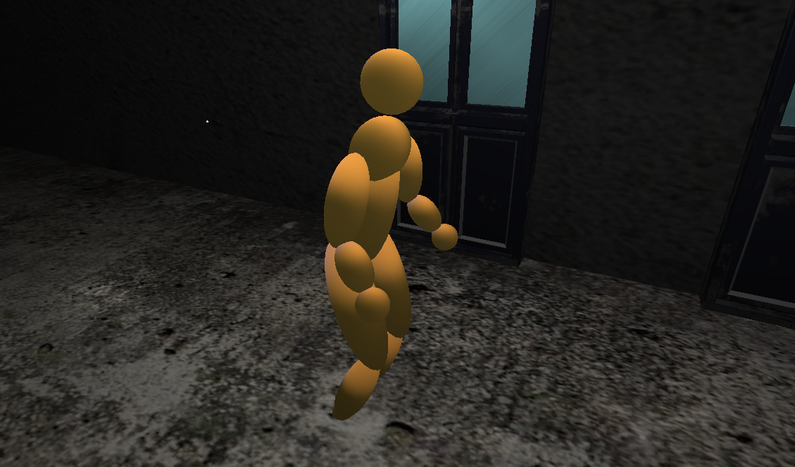
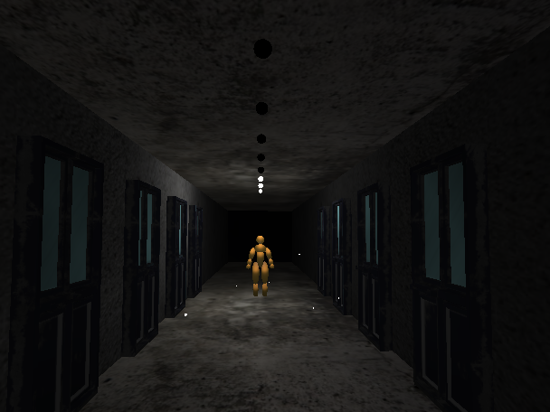
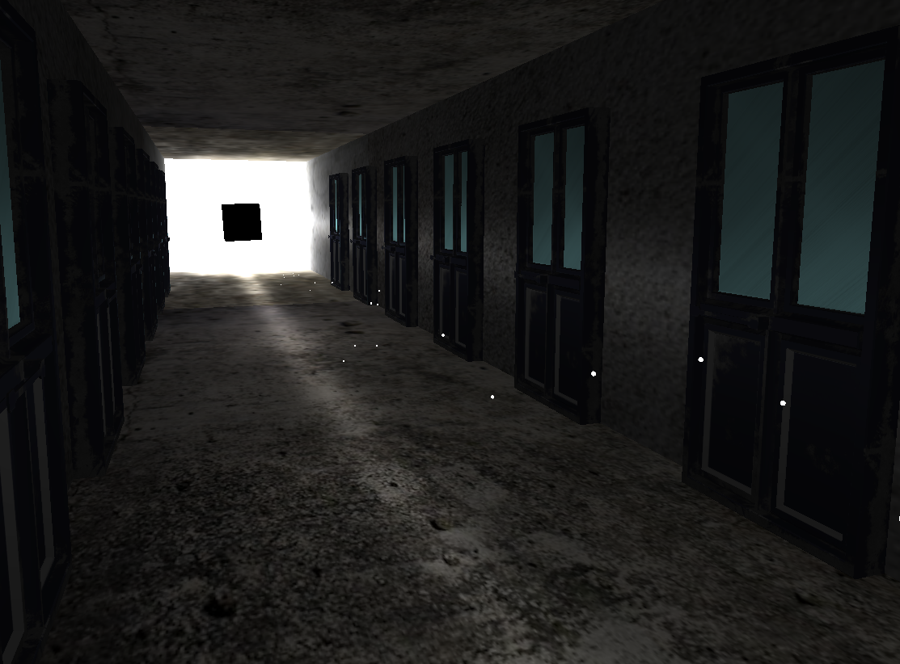

For my project, I decided to create an endless hallway which a player can walk down using the r key. I decided on this project because I realized the OpenGL system provided a lot of control over the position and orientation of an object within the world. This level of control and the ability to dynamically alter the placements of items based on other elements of the scene, informed the direction I would take my project. An infinite hallway illusion is a fairly straightforward effect to do in most 3D modeling softwares. However it is difficult to make all the objects interface with one another in a way that ensures minimal glitches and bugs. I decided that I would try and tackle this challenge and attempt to make an interactable infinite hallway for my final project.
One of the primary focuses of my project was on designing a realistic and interesting movement model for the controlable character. I began with a simple sin function and used it to block out the motion of the left leg. It took almost an hour of trial and error to get a result that I was happy with, but after using my own motion as a reference I managed to create an animation I was happy with. After getting one leg working, I just needed to offset the motion to get the other one to look alright. Working up to the arms, I was able to get a slight swing motion down in a pretty short amount of time, working off of the experience I had with designing the leg. The aspect of the motion that really tied everything togather was the slight bobbing of the torso that I added near the end of the process. Since the entire model is designed off of a sin wave, I was able to make the motion feel very cohesive if a little bit robotic. I also used that same sin function to add a modular amount to the forward position, ensuring the character would move forward at a rate that was in time with their movements.
The original idea for the hallway was supposed to be significantly more clean and sanitary. I wanted to go for a backrooms aesthetic with bright retro wallpaper and drywall tile celings. But after spending a few hours looking for textures online, I realized that with the way I was designing the walls and lighting it would be a lot easier to make the room a lot more grungy and dark. The doors were a very early addition to give the hallway more detail and make the entire thing feel a bit more ominous. The model and texture for that was actually very easy to find and worked pretty much immediatly after dropping it into the scene which I was very greatful for.
The lighting for the scene was easily the biggest time sink out of the entire project. I wanted to include multiple different lights in the scene even from the inital idea. I had this image of the lights being like those flouresent tube lamps and flickering as you passed by. I immediatly dropped that idea for being way too complex, but some of that vision was still retained in the celling lights of the final project. There are three total lights that are on at any given moment, with a total of 20 lights extending forward in front of the character. As the character walks forward, the light behind you slowly fades, and a light in front of you slowly turns on. I was very happy with how the fade in effects looked. At first the lights would move in binary, flashing in and out of existence, but after realizing it looked a bit weird, I used a uniform variable in the shader in order to shade the first and last light so they would gently turn off and on. This gave the illusion that the lights were turning on as you walked forward.
In addition to the three point lights that I used for the smaller celing lights, I also included one large directional light to cover the entire scene. It was very dim but it made sure that you could still almost make out objects that were further down the hall. The second to last light I added was the bright cube at the very end of the hallway. I figured it wouldn't be an infinite hallway unless you were trying to make your way towards something, so I added a large overexposed point light to serve as the goalpost that always remains just out of reach.
By far the most risky addition to the scene in terms of the lighting, was the choice to make the particles in the scene emit light. At first they were supposed to be bugs or insects flying past the player, to give the hallway a bit more of a discomforting atmosphere. But after working with a temporary white sphere as the stand in for the bugs, I realized that in combination with the light at the end of the hall, it made the spheres look like sparks and the entire scene took on a very ethereal quality. I decided to lean into that aspect of things and made the spheres even smaller and faster. Finally I gave each particle a point light attatched to it, which would illuminate parts of the scene in a very small way. I'm a huge fan of how this looks in motion and how dramatic the entire hallway is.
The most useful resource outside of class was easily this website. It contains a lot of individual tutorials about OpenGL. They use a lot of different strategies than we used in class, however using that information to supplement the code I had was what allowed me to figure out a lot of the biggest challenges in my project.